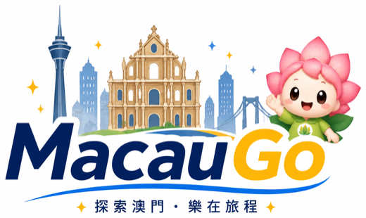
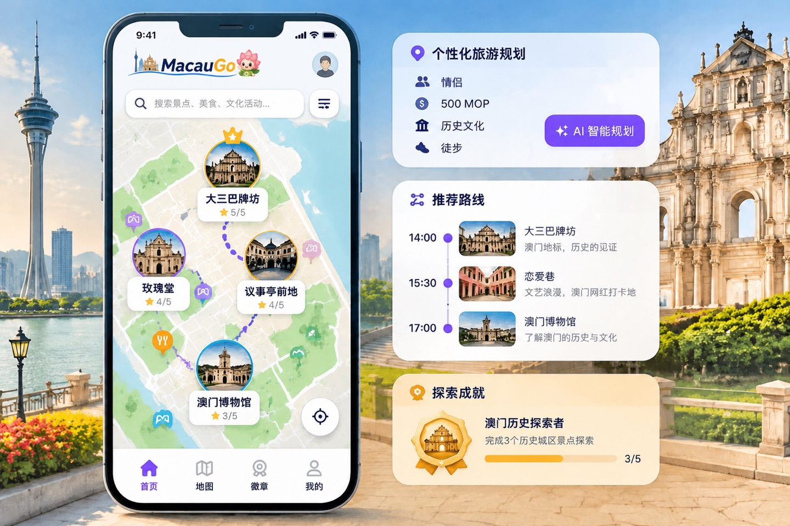
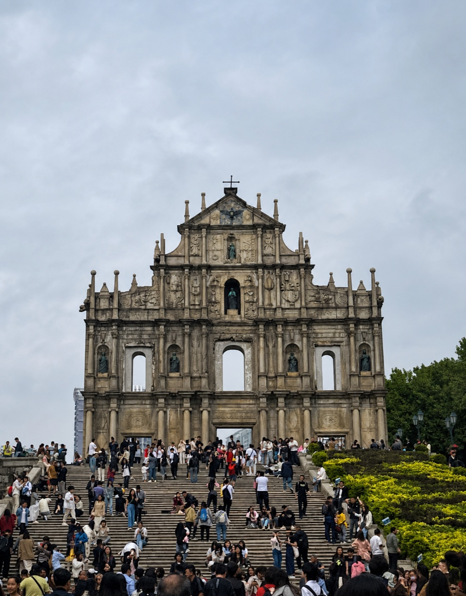
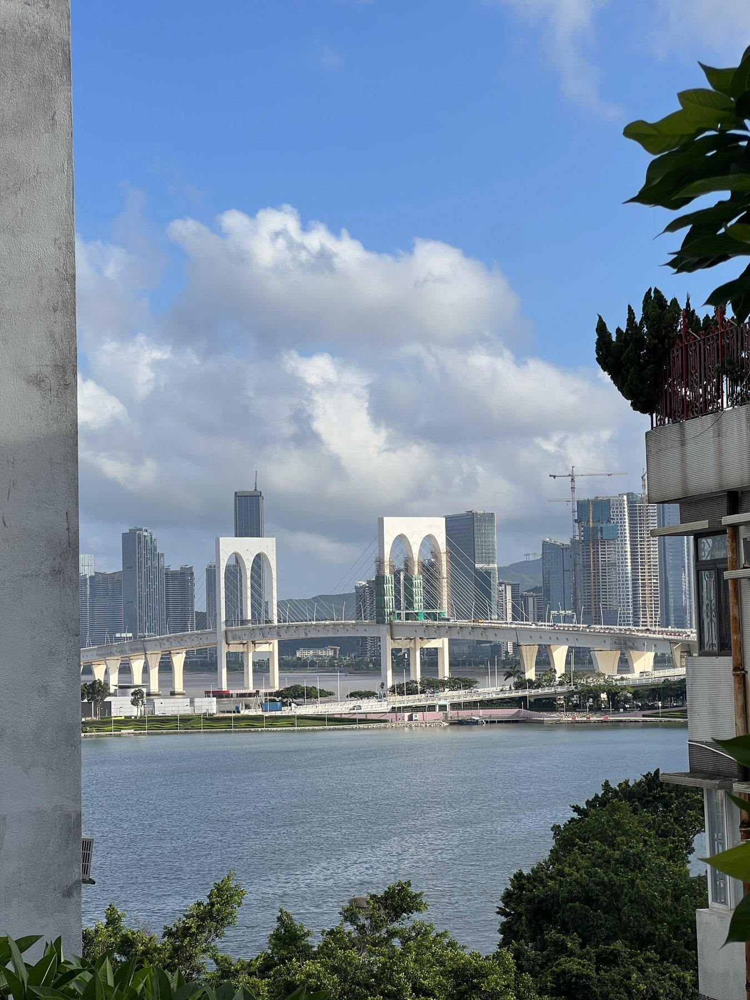
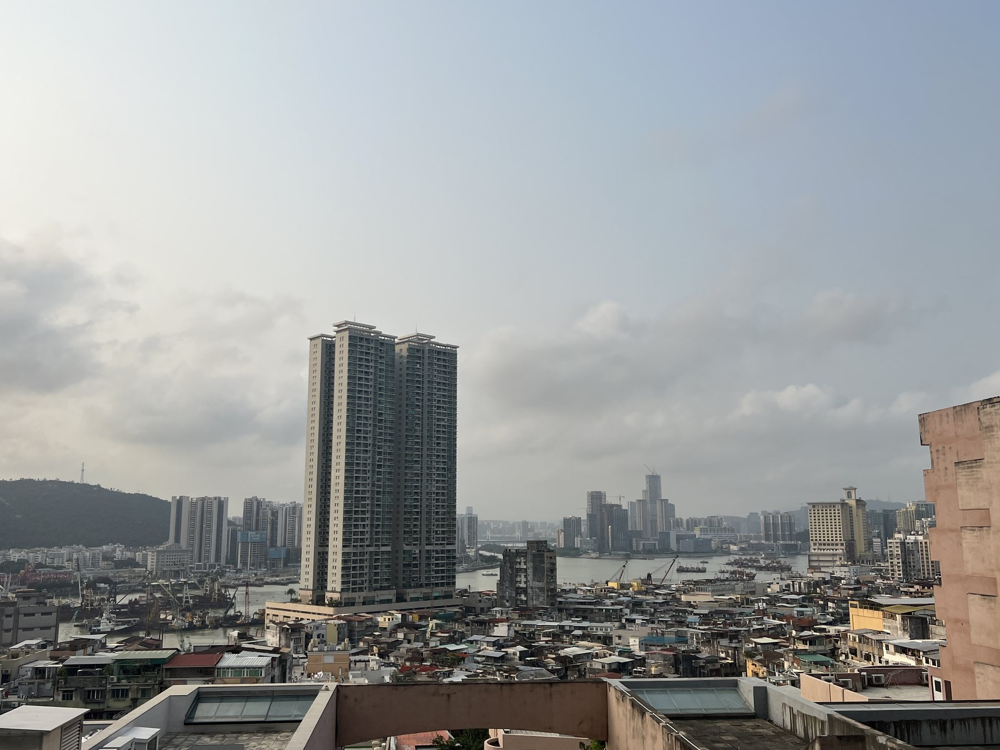
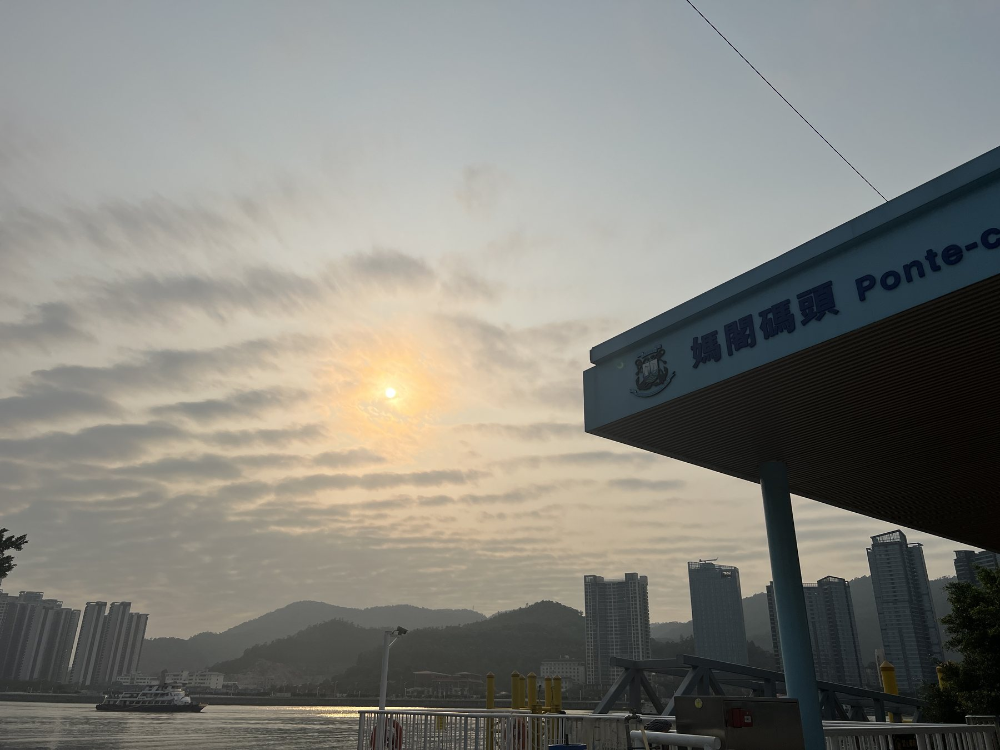
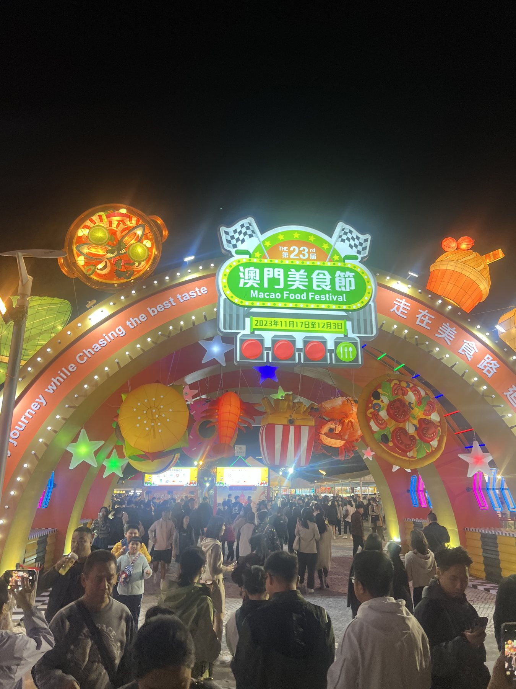
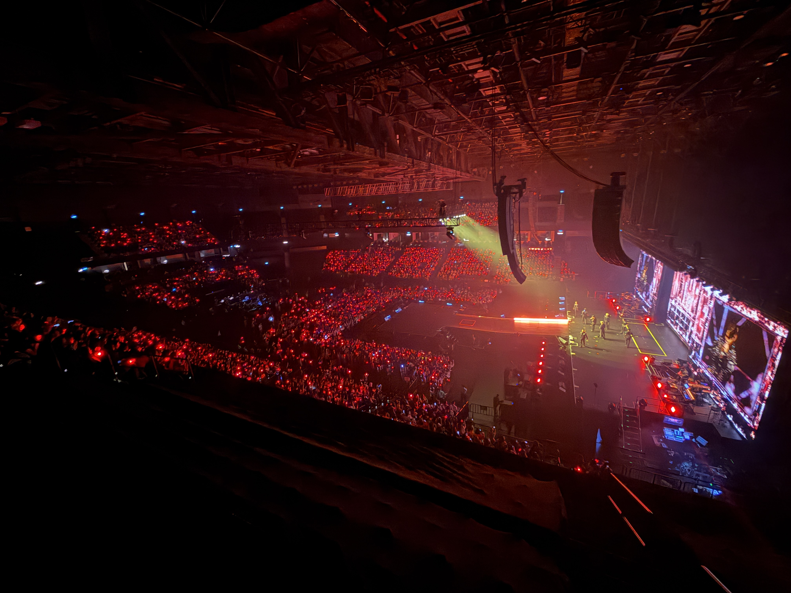
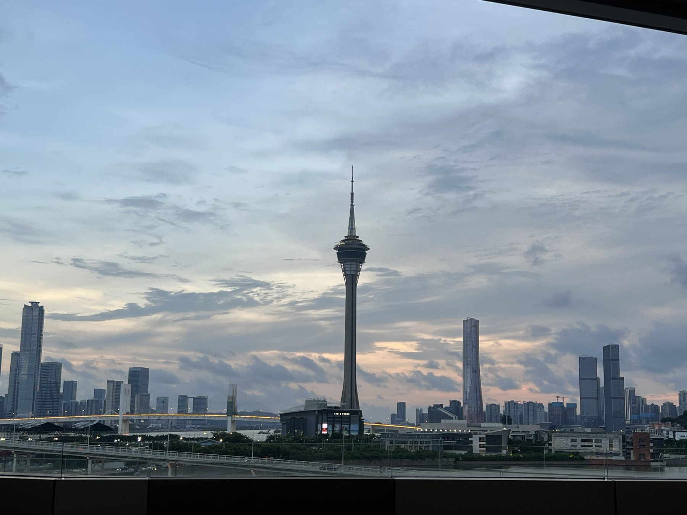

沉浸式世界观
城市被组织成不同主题区域，景点不再孤立，而是同一段冒险故事中的章节。
STORY POWER
开始探索 →NEW QUEST 澳门 AI 城市探索智能体
MacauGo 用 AI 为你规划专属路线，让真实地点触发故事、任务与徽章。告别“拍照就走”，开启一场属于你的澳门城市冒险。
距离你 120 m
01 / 项目理念
把 USJ 的沉浸叙事、Pokémon GO 的现实探索机制与 AI Agent 的个性决策融合起来——整座澳门，就是一座开放式智慧主题乐园。
城市被组织成不同主题区域，景点不再孤立，而是同一段冒险故事中的章节。
STORY POWER靠近真实地点即可触发内容、完成任务并收集徽章，让脚步带来持续惊喜。
LOCATION POWER理解时间、预算与兴趣，随天气、位置和体力变化，持续调整你的专属旅程。
AGENT POWER一座会回应你的城市
02 / 为什么需要它
传统旅程往往是“查攻略 → 导航 → 拍照 → 离开”。MacauGo 希望把被忽略的文化故事，重新变成游客愿意主动参与的体验。
路线在地图、介绍在网站、推荐在社交媒体，首次到访者需要自己拼起整个行程。
情侣想拍照、孩子想互动、长者少步行，一条热门路线无法理解所有人的真实需要。
游客到达历史建筑后拍照便走，缺少故事、问题与任务来建立真正的文化连接。
第一次来澳门情侣与朋友亲子家庭文化探索者国际游客
03 / 核心产品体验
MacauGo 不只是生成一条路线，而是陪伴你完成从计划、行走、发现到收藏的完整旅程。
输入人数、预算、兴趣、时间与交通方式。AI Agent 会匹配景点、优化顺序并预留真实游玩节奏。
两个人，下午 4 小时，预算 500 澳门币。喜欢历史和拍照，希望主要步行。
收到！我会避开过度绕路，为你安排一条光线最适合拍照的旧城路线。
GPS 将虚拟任务锚定在真实澳门。靠近景点即可解锁故事、问答或拍照挑战，未来还可使用 NFC 实体打卡。

完成景点打卡、文化问答和拍照任务，获得积分、徽章与探索等级，形成独一无二的个人澳门档案。
澳门文化探索者
10 / 10 已完成城市内容场景
从地标建筑到社区烟火，从文化演出到特色美食，每一种城市元素都能转化为故事、任务与收藏。






04 / 使用流程
告诉 AI 人数、预算与兴趣
获得专属地点与时间安排
查看定位、路线与附近任务
解锁故事、问答与拍照任务
带走积分、徽章与探索档案
05 / 关于我
具备人工智能、大数据分析及智能应用开发经验，熟悉大语言模型应用、AI Agent 架构设计和 Web 应用开发。曾围绕智慧文旅设计多模态智能体系统，并在 2025「数字澳门」大赛获得二等奖。
我希望继续连接 AI 技术与澳门真实旅游场景，让游客不只是看见澳门，也能理解澳门、参与澳门，并带走属于自己的城市故事。
06 / 参赛目标
FINAL QUEST
Lotusie 会一路陪伴你规划路线 · 解锁故事 · 收藏回忆
